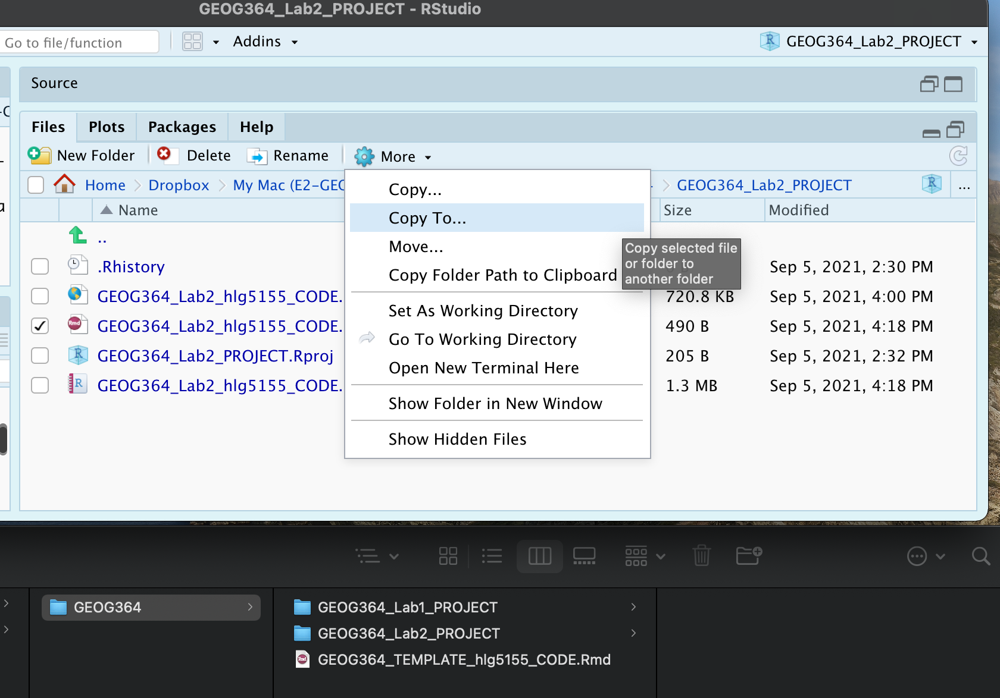

Lab 2: Playing with data
GEOG-364 - Spatial Analysis
GEOG-364 - Spatial Analysis
Welcome to Lab 2!
The aim of this lab is to start looking at tables of data and to make your first maps.
By the end of this week’s lab, you will be able to:
- Make a markdown template
- Read in data from an excel file
- Conduct exploratory data analysis
- Wrangle a table of data
- Make initial plots and maps
The lab is worth 110 points and there is a rubric at the end of this page.
Assignment 2 is due by midnight the night before your next lab on Canvas..
Step A: Set up - DON’T SKIP.
Setting up your markdown files takes time and can get repetitive. Making a template skips a lot of future set up.
To to this, we are going to follow these steps:
- A1 Set up the lab
- A2 Understand and edit YAML code
- A3 Load libraries
- A4 Edit code chunk options to remove library output from your html files
- A5 Save your lab script template
A1. Set up the lab
First, we want to set up R in the same way as Lab 1, creating a project file and a blank markdown document.
Task 1. [ ] Open R-Studio.
Create a new R-Project in your GEOG-364
folder called Lab2_PROJECT.
Reminder: Tutorial
2C: Projects.
Task 2. [ ] Go on Canvas to the Lab 2 Canvas page and download the
dataset, frostdata.xlsx.
Move it to inside your
Lab2_PROJECT folder.
Task 3. [ ] We need to install some more packages.
Go to to the
packages tab, click install to get to the app-store and download/install
these packages:
Reminder: Tutorial:
Packages cheatsheet.
readxlviridisggstatsplotsfterratigris
Task 4. [ ] Create a new RMarkdown file titled
GEOG-364 Lab 2. So we can grade more anonymously, set the
author name to your EMAIL USER-ID e.g. hlg5155
Reminder: Tutorial
4B: Create a Markdown Doc.
A2. Edit your YAML code
Our output still looks pretty boring when we knit. Use Tutorial 4E to learn about and edit your YAML code. Make sure you understand what all the options do (toc is table of contents).
Task 5. [ ] Use the tutorial to change your YAML code to match the text in the tutorial. Change the theme to any one of your choice that’s not lumen (see here to view available themes - https://bootswatch.com/.)
A3: Load libraries
We should have all the packages we need installed, but we need to
load/open them. We also need to do this EVERY TIME we start R-Studio or
when we press knit (in the way you click on an app on your phone before
you can use it).
Task 6. [ ] Click on your lab script (the Rmd file) and delete all
the ‘welcome text’ after line 11.
Press enter a few times and make a
new level-1 heading called Set Up.
Task 7. [ ] Press enter a few times, then make a new code chunk containing this code which will load the libraries each time.
library(tidyverse)
library(sf)
library(readxl)
library(skimr)
library(tmap)
library(viridis)
library(tigris)
library(palmerpenguins)
library(readxl)Task 8. [ ] Press the green arrow on the right of the code chunk to
run the code inside it. You will see a load of “welcome text” telling
your details about the packages you just loaded.
Press the green
arrow AGAIN. The text should disappear unless there is an error.
A4: Edit code chunk options
Press knit. I’m guessing you will see that all the “library loading text” has returned, making your report look unprofessional and messy.
Let’s remove this by editing our code chunk options.
Task 9. [ ] Follow Tutorial 4F to edit your global code chunk options to remove messages and warnings. Press knit again and your lab should look much cleaner.
A5: Save your lab script template
Your lab script should now look like this, but with your theme and YAML options of choice (you might have a few different libraries than in my screenshot). You should also be able to knit it successfully. If not, go back and do the previous sections!

You can use steps A1-A5 for every new lab to set up your lab script. But it is much easier to save the file we have just created as a template, then in future labs we can just make a copy. To do this quickly:
Task 10. [ ] Go to the files tab (make sure you are running your project).
- Check the box by
GEOG364_Lab2_userID_CODE.Rmd(with your ID) - Now click on the More menu, then “Copy To”.
- Make a copy in your main GEOG-364 folder called
GEOG364_TEMPLATE_userID_CODE.Rmd. - If you’re on R-Studio-Cloud, just make a copy in the same folder, or
download it to your computer using “export”

Step B: Code showcase & ChatGPT
Today’s code showcase looks at how to apply commands (functions) to both basic data and columns in a spreadsheet. This builds on the Data Camp chapters from Homework 1 and 2 (https://app.datacamp.com/groups/geog-364/assignments).
Commands, or functions, are the verbs of ‘speaking R’. They are actions, things you do. Commands ALWAYS have parentheses/brackets ( ) after them. It’s how you know it’s a command.
You can look at the help file for any command by typing ? then it’s name
into the CONSOLE e.g. ?mean. Or you can go to the help tab
next to packages tab, then search for it there. Note, you might have to
load the library first! Ever tried getting the instagram help page
before you even opened the app? ;)
B1. Commands/functions with empty ( )
These commands are often used to launch an interactive command, or to check something on your computer. You still need the ( ) afterwards, but it can be left empty. I typically run these in the console. Examples
Sys.Date( )
getwd( )file.choose( )
Task 11. [ ]. One by one, copy/pate the three commands above EXACTLY
into the console and press enter to run. As needed, look at the
helpfiles for each of them. E.g. in the console, run
?Sys.Date, ?getwd, ?file.choose.
In your report, make a heading called Code Showcase (if you
haven’t).
Task 12. [ ]. In your report, make a heading called Code Showcase (if you haven’t already).Below it, create a heading-level-2 called “basic commands”. Underneath that, explain what each of the three commands does. Hint, file.choose does NOT open/load any files..
B2. Commands that need information/data
Some commands need a little more information. For example, the
data() command loads an inbuilt dataset into your workspace
so we need to tell it which dataset we want. rnorm()
generates a series of random numbers from a normal distribution, but we
need to tell it how many we need Examples
data(ggplot2::mpg)# loads the mpg data from package ggplot2. Note, the :: means “use package”summary(mpg)# summarise the entire mgp dataset (hint for lab 1, this is how to get the average year!)rnorm(20)# generates a series of 20 random numbers from a normal distributionnames(mpg)# print the column names of a dataset
Task 13. [ ]. Using the information above, try these tasks:
- Load the penguins dataset from the package
palmerpenguins. - Summarise the penguins dataset using the
glimpse()command.
B3. Applying commands to columns & rows of a spreadsheet
Just like Lab 1’s ‘what’s the mean year’ question, we often need to apply commands to individual rows or columns in a spreadsheet. There are several ways to do this.
- Use square brackets and the row/column number
- Use a $ and the column name.
For example, from https://www.statology.org/r-mean-of-column/, here’s how to get that mean year from the mpg data:
#calculate mean using column name, note the $ !
mean(mpg$year)## [1] 2003.5#calculate mean using column name (ignore missing values)
mean(mpg$year, na.rm=TRUE)## [1] 2003.5#calculate mean using column position, e.g. we're calculating the mean of the Year column (four from left)
mean(mpg[ , 4], na.rm=TRUE)## [1] NATask 14. [ ]. Using the information above, try these tasks
- Calculate the mean flipper_lenth_mm.
- Calculate the MEDIAN body mass (hint, you need to spell the column name EXACTLY for it to work, case sensitive)
B4. ChatGPT introduction: Is there just one command for a single action?
There are LOADS! Just like there are many words in English to describe the mean, there are many ways to do this in R, especially when you take into account all of the apps out there.
This is one reason why a new(ish) tool called ChatGPT is out there. We will talk in class today about its pros and cons.
Task 15. [ ]. Go here: https://chatgpt.com/. You might need an account.
Task 16. [ ]. One by one, copy each of these questions into the chat window to get a sense of ChatGPT’s strengths and weaknesses.
- How do i get the mean in R for the year column of the mpg dataset?
- i dont get it
- i still dont get it
- i still don’t get it. can you explain the concept as though I was a kid
- OK.. but where do I even type these things?
- nope…
- OK,got it :) now, could you give me code chunks for 20 different ways to find this mean in R without installing any packages/apps?
- and now 20 more frpm a different package/app each time
- Out of all of this, which command for the mean would you recommend for the mpg data e.g. simple/does the job/doesn’t break
- Just out of interest, how would i do this in another programming language like python?
THIS is how I learn a new programming concept. I NEVER take it’s first
answer as the “best” one.
In terms of what counts as cheating,
we’re going to talk about this as a class. But think of the name of your
friend/older-sibling/cousin - someone who you go to for advice and they
know loads, but they can be a bit smug about it. Now replace the word
ChatGPT with their name!
Is it OK for David to brainstorm
different code options for the mean? Sure!
Is it OK if I
tell David my lab instructions, then copy/paste his
answer.Nope..
YOU DON’T NEED TO SUBMIT ANYTHING FOR STEP B4
Step C: Last Frost Date Analysis
Now, the lab! This section is based on data from Chapter 6 of McGrew () Specifically we are going to conduct some exploratory data analysis on average last spring frost dates across the South East USA.
To to this, we are going to follow these steps:
- C1 Investigate the topic before touching the data
- C2 Read the excel file containing the data into R
- C3 Calculate summary statistics and “wrangle” the data
- C4 Make some initial plots & maps
C1: Exploratory Investigations
Before we touch any data, it’s important to start with words. We need to summarise what we already know about the dataset, the population under study and any important context.
The aim of this lab is to analyse the “average last frost dates” obtained from weather stations across the South Eastern USA. E.g. what day of year, on average, is the final day to get frost. See chapter 6 of the textbook for a brief summary.
The textbook (and us) are using data obtained from this dissertation
to assess the spatial distribution of average spring frost dates:
Parnell, 2005, “A Climatology of Frost Extremes Across the Southeast
United States, 1950–2009”:
https://www.proquest.com/openview/d5a7301f0cbe941ead48c96888f791b8/1?pq-origsite=gscholar&cbl=18750&diss=y
Task 17. [ ]. Choose any state out of Alabama, Florida, Georgia,
North Carolina, South Carolina or Virginia.
Choose a different
state to your friends
Task 18. [ ]. Read the abstract of the study above to understand the dataset (click the link and skim read pages iv and v, e.g. the bit before the table of contents).
Task 19. [ ]. In your report, make a new level-1 heading called
Last Spring Frost and press enter a few times. I’m
going to stop saying, “press enter a few times”, or “add a blank line”
now. Keep doing it!
Task 20. [ ]. In the text below, briefly summarise the topic and
dataset. Be as precise as you can!
Your answer should include..: +
What topic/question are we studying? + What is the context? Why was the
original study conducted? + Specifically, what dataset are we using?
e.g. What is the SPECIFIC object of analysis and its domain (this is
trickier than it looks, think about it..)? What are the variables and
units etc.. + Anything else that might be relevant to someone analysing
the data + Given the topic, are there any other things we should be
thinking about. E.g. why might I be concerned about climate change
looking at a single average last frost?
Note,there is a spell check next to the knit button at the top of the script and press knit regularly to check it all looks good
C2: Read in the frostdata excel file
Task 21. [ ]. Make sure frostdata.xslx is in your Lab 2
folder. Use the read_excel() to read the data into R and
save as a variable called frost. (https://www.geeksforgeeks.org/reading-and-writing-excel-files-with-r-using-readxl-and-writexl/)
You should see a spreadsheet/table/data.frame with these columns:
- Station: The name of the weather station
- State: The US State that the station resides in
- Type_Fake: A synthetic column I added to put in a “type” of station
- Latitude: The latitude of the station (degrees)
- Longitude: The longitude of the station (degrees)
- Elevation: The elevation of the station (feet)
- Dist_to_Coast: The distance from the station to the coast
(miles)
- Avg_DOY_SpringFrost: The Day-Of-Year of the average final spring frost date for that station
When I say Day-Of-Year, I mean a number from 1-365 representing the month/day of the year e.g. Jan-1:1, Jan-2:2… Jan-31:31, Feb-1:32… Dec-31:365. We use this number instead of the month/day because its easier to analyse.
TWEAKS WILL BE MADE FROM HERE ONWARDS BEFORE 4PM TUESDAY. Mostly task numbering but likely one more thing to do at the end.
-
- Either, go to the environment quadrant and click on its NAME (e.g. click the word frost not the blue arrow)
- Or.. use the command
View(frost).
C3. Summary Statistics
Make a new level-2 heading called Summary Statistics e.g
## Summary Statisics
C3.1 General summaries
-
- A specification of the unit-of-observation under study (as specific as possible). E.g. what does each row represent
- What attributes/information we know about each unit? E.g. what columns do we have
- A description of each column & units as a bullet point/numbered
list
Help here: https://www.markdownguide.org/basic-syntax/ - The number of units in our sample (e.g. the number of rows)
- The mean longitude
- The standard deviation of the distance to the coast
- Your chosen State.
C3.2 Specific columns
Sometimes we want to deal with only one specific column in our spreadsheet/dataframe, for example applying the mean, standard deviation, inter-quartile range command to say just the distance_to_the_coast.
To do this, we use the $ symbol. For example, here I’m simply selecting the data in the elevation column only and saving it to a new variable called elevationdata.
elevationdata <- frost$ElevationTry it yourself. You should have seen that as you typed the $, it gave you all the available column names to choose from.
This means we can now easily summarise specific columns. For example:
summary(frost)will create a summary of the whole spreadsheet,summary(frost$Longitude)will only summarise the Longitude column.
mean(frost$Dist_to_Coast)will take the mean of the Dist_to_Coast column in the frost dataframe.
-
- The mean of the Longitude column in the frost dataframe
- The minimum distance to the coast using the
mincommand.
E.g. apply themincommand to theDist_to_Coastcolumn of the frost dataframe - The median climatological frost date.
E.g. apply themediancommand to theAvg_DOY_SpringFrostcolumn of the frost dataframe (bonus - explain what the median is) - The interquartile range of the Latitude of the frost data (hint, google the command)
C3.3 Summaries by group
Make a new level 2 sub-heading called
Group statistics.
The table command
Sometimes we want to count the occurrences of some category in our dataset. For example, if you look at the frost dataset, it might be interesting to know how many stations were in each US State. To do this, we use the table command: We can use the table command to assess how many rows of our data.frame/spreadsheet fall into different groups. See Tutorial 7B for how to use it and some online tutorials.
Statistics by group
What if we want to do more than just count the number of rows? Well,
we can use the group_by() and summarise()
commands and save the answer to a new variable.
See Tutorial 7C for a worked example.
-
- split the frost dataframe by the
Statecolumn, - Calculate the maximum, minimum and mean average spring final frost
day (
Avg_DOY_SpringFrost) - save the result as a new variable called
frost.summary.state. - print the results
- Using your output, write under the code chunk in a full sentence what the mean spring final frost Day of Year is for your chosen state.
- split the frost dataframe by the
C3.4 Histograms
Sometimes it’s just nice to visualise a distribution, using a histogram. You can see tiny mini ones for each variable/column in the output of the skim command, but let’s make something more professional.
C4 Spatial mapping
Make a new level 2 sub-heading called Mapping.
So far, we have ignored the fact our data has a location! We will cover this in more detail in lab 3, but for now, let’s make a quick map. To do this, we need to make R realise that our data contains spatial coordinates.
Create a new code chunk and add this code:
frost.sf <- st_as_sf(frost,coords = c("Longitude", "Latitude"),crs=4326)The QTM command allows us to make quick interactive plots.
tmap_mode("view")
qtm(frost.sf,dots.col="Elevation")-
- What is the pattern of the last spring frost dates and what influences it?
- Was it appropriate to apply the Z-score in this case? (prove it!)
- Is the last frost day a raster or a vector dataset? Are there consequences of using a point dataset to measure it?
D. Submitting your Lab
Remember to save your work throughout and to spell check your writing (next to the save button). Now, press the knit button again. If you have not made any mistakes in the code then R should create a html file in your lab 1 folder which includes your answers. If you look at your lab 1 folder, you should see this there - complete with a very recent time-stamp.
In that folder, double click on the html file. This will open it in your browser. CHECK THAT THIS IS WHAT YOU WANT TO SUBMIT
Now go to Canvas and submit BOTH your html and your .Rmd file in Lab 1.

Lab 2 submission check-list
HTML FILE SUBMISSION - 10 marks
RMD CODE SUBMISSION - 10 marks
MARKDOWN/CODE STYLE - 20 MARKS
Your code and document is neat and easy to read. LOOK AT YOUR HTML FILE IN YOUR WEB-BROWSER BEFORE YOU SUBMIT. There is also a spell check next to the save button. You have written your answers below the relevant code chunk in full sentences in a way that is easy to find and grade. For example, you have written in full sentences, it is clear what your answers are referring to.
Above and beyond: 5 MARKS
Here you need to go above and beyond the lab questions in some way. Here in lab 1, maybe you added in different text formats to make your lab script more clear (bold/italic etc). Maybe you worked out how to add axis labels to ggplot (note, it’s a pain), maybe you used nested headings or sub-headings, or worked out how to add a table of contents.
You get 2/5 for doing something new in any way, scaled to 5/5 for something really impressive or multiple small things.
[110 marks total]
Overall, here is what your lab should correspond to:
| Grade | % Mark | Rubric |
|---|---|---|
| A* | 98-100 | Exceptional. Not only was it near perfect, but the graders learned something. THIS IS HARD TO GET. |
| NA | 96+ | You went above and beyond |
| A | 93+: | Everything asked for with high quality. Class example |
| A- | 90+ | The odd minor mistake, All code done but not written up in full sentences etc. A little less care |
| B+ | 87+ | More minor mistakes. Things like missing units, getting the odd question wrong, no workings shown |
| B | 83+ | Solid work but the odd larger mistake or missing answer. Completely misinterpreted something, that type of thing |
| B- | 80+ | Starting to miss entire/questions sections, or multiple larger mistakes. Still a solid attempt. |
| C+ | 77+ | You made a good effort and did some things well, but there were a lot of problems. (e.g. you wrote up the text well, but messed up the code) |
| C | 70+ | It’s clear you tried and learned something. Just attending labs will get you this much as we can help you get to this stage |
| D | 60+ | You attempt the lab and submit something. Not clear you put in much effort or you had real issues |
| F | 0+ | Didn’t submit, or incredibly limited attempt. |
Website created and maintained by Helen Greatrex. Website template by Noli Brazil